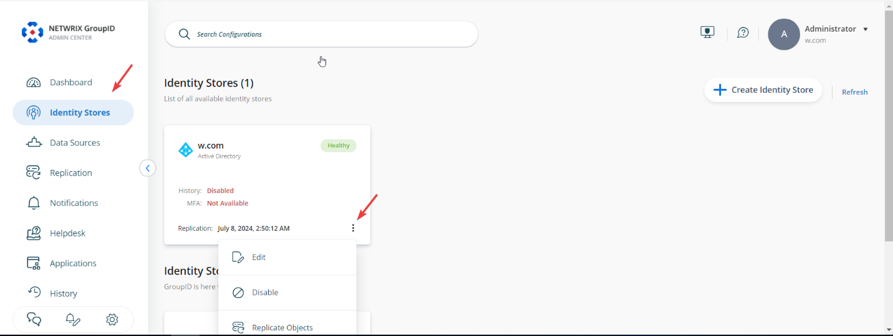
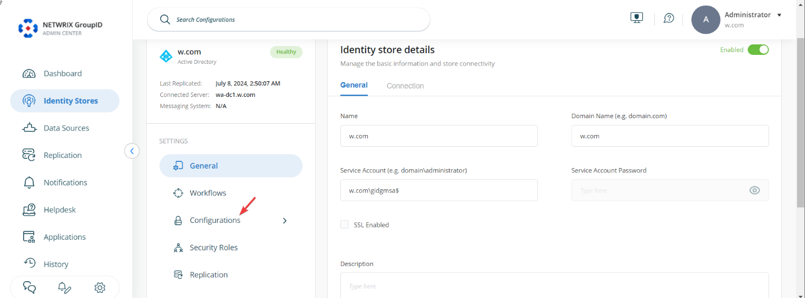
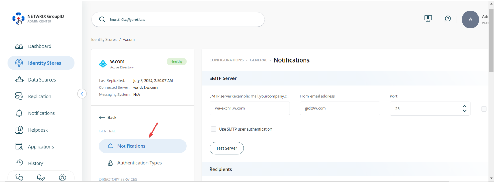
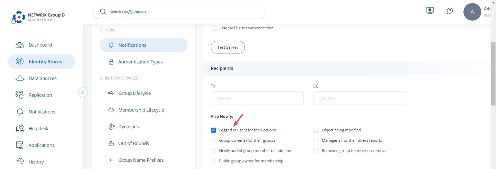
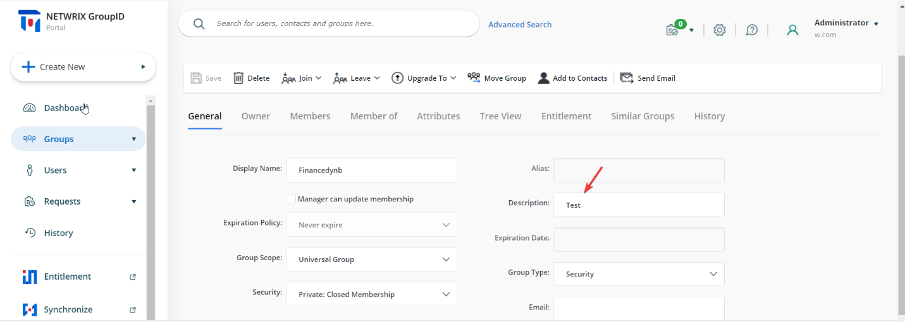
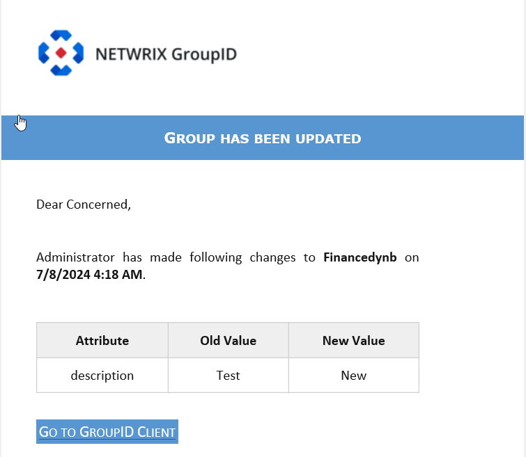

Applies To
Directory Manager 11
Overview
You can configure Netwrix Directory Manager 11 (formerly GroupID) to send users an email notification whenever they make changes to directory objects through the user portal. To enable this feature, update the notification settings in the identity store.
Instructions
- In Directory Manager Admin Center, click the Identity Stores node.
-
For your identity store, click the three dots (...) button and select
Edit.
 -
On the next page, click the Configurations button.
 -
Click the Notifications button.
 -
Under the Also Notify option, select the checkbox labeled
Logged in users for their actions.
 - Scroll down and click the Save button.
With this notification setting enabled, email notifications will be sent to the logged-in user for changes they make to directory objects using the portal.
NOTE: This setting applies to mail-enabled users only.
Impact
In the example below, an end user changes the Description field of a group.

The user will receive an email notification for the changes they made.
